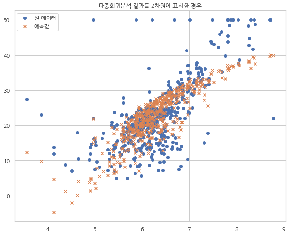

스케일링과 다중공선성
3.10. 스케일링과 다중공선성#
import statsmodels.api as sm
boston = sm.datasets.get_rdataset("Boston", "MASS").data
formula_scaled = "medv ~ " \
"scale(lstat) + scale(rm) + scale(ptratio) + scale(dis) + scale(nox)" \
"+ C(chas) + scale(black) + scale(zn) + scale(crim) + scale(rad) + scale(tax)"
formula_notscaled = "medv ~ " \
"lstat + rm + ptratio + dis + nox" \
"+ C(chas) + black + zn + crim + rad + tax"
result_scaled = sm.OLS.from_formula(formula_scaled, boston).fit()
result_notscaled = sm.OLS.from_formula(formula_notscaled, boston).fit()
print(result_scaled.summary())
OLS Regression Results
==============================================================================
Dep. Variable: medv R-squared: 0.741
Model: OLS Adj. R-squared: 0.735
Method: Least Squares F-statistic: 128.2
Date: Fri, 29 Jul 2022 Prob (F-statistic): 5.54e-137
Time: 09:02:45 Log-Likelihood: -1498.9
No. Observations: 506 AIC: 3022.
Df Residuals: 494 BIC: 3072.
Df Model: 11
Covariance Type: nonrobust
==================================================================================
coef std err t P>|t| [0.025 0.975]
----------------------------------------------------------------------------------
Intercept 22.3448 0.219 102.178 0.000 21.915 22.774
C(chas)[T.1] 2.7187 0.854 3.183 0.002 1.040 4.397
scale(lstat) -3.7279 0.338 -11.019 0.000 -4.393 -3.063
scale(rm) 2.6684 0.285 9.356 0.000 2.108 3.229
scale(ptratio) -2.0471 0.279 -7.334 0.000 -2.596 -1.499
scale(dis) -3.1401 0.391 -8.037 0.000 -3.908 -2.372
scale(nox) -2.0115 0.409 -4.915 0.000 -2.816 -1.207
scale(black) 0.8474 0.244 3.475 0.001 0.368 1.327
scale(zn) 1.0682 0.315 3.390 0.001 0.449 1.687
scale(crim) -0.9316 0.282 -3.307 0.001 -1.485 -0.378
scale(rad) 2.6062 0.552 4.726 0.000 1.523 3.690
scale(tax) -1.9831 0.568 -3.493 0.001 -3.099 -0.867
==============================================================================
Omnibus: 178.430 Durbin-Watson: 1.078
Prob(Omnibus): 0.000 Jarque-Bera (JB): 787.785
Skew: 1.523 Prob(JB): 8.60e-172
Kurtosis: 8.300 Cond. No. 9.11
==============================================================================
Notes:
[1] Standard Errors assume that the covariance matrix of the errors is correctly specified.
print(result_notscaled.summary())
OLS Regression Results
==============================================================================
Dep. Variable: medv R-squared: 0.741
Model: OLS Adj. R-squared: 0.735
Method: Least Squares F-statistic: 128.2
Date: Fri, 29 Jul 2022 Prob (F-statistic): 5.54e-137
Time: 09:02:53 Log-Likelihood: -1498.9
No. Observations: 506 AIC: 3022.
Df Residuals: 494 BIC: 3072.
Df Model: 11
Covariance Type: nonrobust
================================================================================
coef std err t P>|t| [0.025 0.975]
--------------------------------------------------------------------------------
Intercept 36.3411 5.067 7.171 0.000 26.385 46.298
C(chas)[T.1] 2.7187 0.854 3.183 0.002 1.040 4.397
lstat -0.5226 0.047 -11.019 0.000 -0.616 -0.429
rm 3.8016 0.406 9.356 0.000 3.003 4.600
ptratio -0.9465 0.129 -7.334 0.000 -1.200 -0.693
dis -1.4927 0.186 -8.037 0.000 -1.858 -1.128
nox -17.3760 3.535 -4.915 0.000 -24.322 -10.430
black 0.0093 0.003 3.475 0.001 0.004 0.015
zn 0.0458 0.014 3.390 0.001 0.019 0.072
crim -0.1084 0.033 -3.307 0.001 -0.173 -0.044
rad 0.2996 0.063 4.726 0.000 0.175 0.424
tax -0.0118 0.003 -3.493 0.001 -0.018 -0.005
==============================================================================
Omnibus: 178.430 Durbin-Watson: 1.078
Prob(Omnibus): 0.000 Jarque-Bera (JB): 787.785
Skew: 1.523 Prob(JB): 8.60e-172
Kurtosis: 8.300 Cond. No. 1.47e+04
==============================================================================
Notes:
[1] Standard Errors assume that the covariance matrix of the errors is correctly specified.
[2] The condition number is large, 1.47e+04. This might indicate that there are
strong multicollinearity or other numerical problems.
corr = boston.corr()
plt.figure(figsize=(8, 8))
sns.heatmap(corr, mask=np.triu(corr), square=True, linewidths=3,
annot=True, fmt="5.2f", annot_kws={"fontsize": 6},
cmap=sns.color_palette("Blues"), cbar=False)
plt.show()
